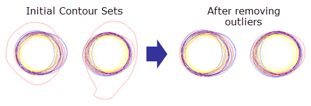

Model calibration uses sets of contours,
which should have outliers removed. A ContourCal MDF script can
output an average contour using input contours and a clip layer.
A layout
with two or more contours for each structure that will be used in
model calibration
At least one
layer containing polygons that each enclose a single contour (the
clip layer)
Procedure
Open the
layout file in Calibre WORKbench. Remove outlier contours.
In Figure 2, the two contour sets
on the left contain outliers.The two contour sets on the right more
closely represent ideal contours and are thus more useful for creating
an average contour. If the outlier contour forms a single line,
right-click the contour and select Delete.
This may not be the case for imported SEM images, in which several segments
must be selected and deleted.
Figure 2. Removing
Outliers From Contour Sets

Create
a Contour Layer Info (CLI) file.
A CLI file describes a clip layer contained in a design
file, and can be used to identify the layer information and averaging
options. An example CLI file is shown:
version 1
contourSetCount 1
contourLog 0.0 100000
contourCostMethod dense
contourAverage on 1 // Turns on averaging
contourSet 1 {
contourlayer 101 // Identifies layer with contours to average.
contourlayer 102 // Can be one layer with multiple ’paths’ or
// multiple contourlayer statements with polygon
// layers.
cliplayer 2000
dose 1.00
defocus 0.00
weight 1
outstartlayer 2001 3
}
If the contours are paths, contours need to be on the same
layer, and thus the CLI file will only contain one layer reference.
Create
a Calibre nmModelflow script that loads the layout and CLI file,
and runs a simulation. The script should also save the output layout
(for example, an OASIS®1 file). An example script is shown:
#Load the layout file.
mdf contour layout gds/contour.gds
#Load the CLI file with contour input data.
mdf contour cli cli/contour.cli -average_only
#Run the simulation.
mdf simulate
#Save the layout to a different file.
mdf contour output layout averaged_contour.oas oasis
Run the
Calibre nmModelflow script from step 3. In the shell prompt, enter
the following, using the name of your script:
calibrewb mdf_script
Results
The script outputs a layout file containing the average contour.
1 OASIS® is
a registered trademark of Thomas Grebinski and licensed for use
to SEMI®, San Jose. SEMI® is
a registered trademark of Semiconductor Equipment and Materials
International.